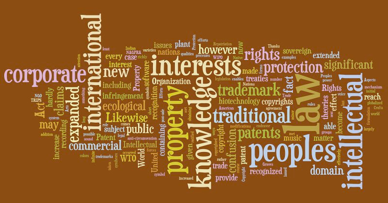
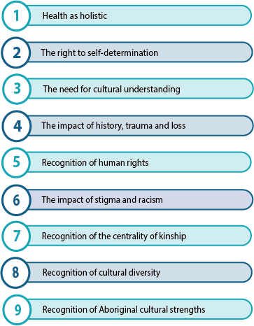

Original Blackboard item · _7400108_1

The Social and Emotional Well-being (SEWB) framework emerged following the World Health Organization’s (WHO)1978 Alma Ata Declaration on Primary Health Care (Who, 1978), which signposted a shift in thinking about health to tackle ‘politically, social and economically unacceptable’ health inequities. This shift coincided with the establishment of Aboriginal Community Controlled Health Organisations in the 1970s (Gee, Dudgeon, Schultz, Hart & Kelly, 2014). Compared to western concepts of mental health, SEWB operates from a set of culturally informed practices that differ in important ways from mainstream biomedical health dialogues. In 2004 Indigenous practitioners and scholars developed nine guiding principles underpinning SEWB.
